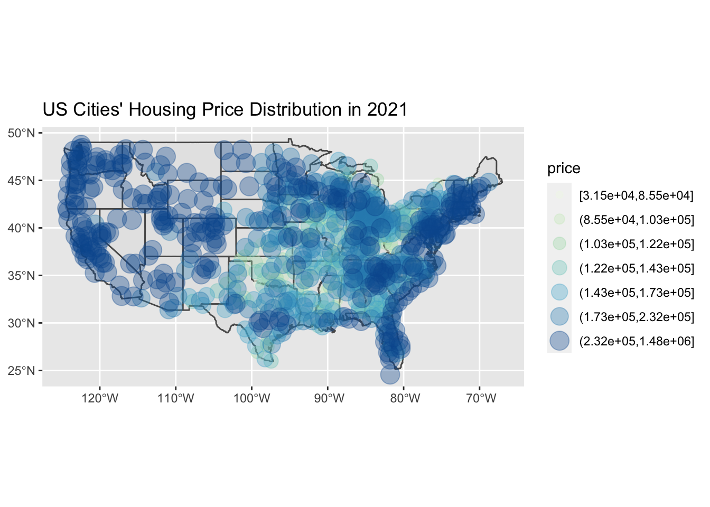

The graph in the front page shows the distribution of S&P CoreLogic Case-Shiller Home Price Indices, one of the leading measures of U.S. residential real estate prices.1 It keeps track of the changes in the value of residential real estate from 2011 to 2021 in 10 metropolitan areas of the U.S, 20 major metropolitan areas, and nine U.S. Census divisions nationally. According to the line, there is a general trend of increasing house prices, although the rate of increase got extremely faster in recent years, starting at about March of 2020. There was a 19.52% increase in the national house price this year (September 1st, 2021) compared to last year (September 1st, 2020), which is more than two times higher than 7.1% increase from 2019 to 2020. This is clearly abnormal from the linear trend that persisted for first 8 years. So is it true that we are at the beginning of another house bubble? Let’s investigate more.
How does the increasing house prices impact U.S. by states and geographical locations? To address this question, U.S. map with the distribution of house values by metropolitan areas are created and visualized.

There are striking differences between the map of 2006 and 2021. Not only did the points on the map representing the number of metropolitan areas increase, but also the house price values of all places increased heavily, indicated by the size and color of the points. This illustrates how the real estate values developed along with the advancing society and economy. Another observation is that while the high price houses are concentrated relatively heavily on the east and west coast of the U.S. in 2006, that of 2021 reveals a more widespread pattern over the locations. Therefore, we can visualize that the price gap is reducing, although the price value is increasing. However, it is still true that states with core metropolitan areas such as Washington, California, New York, New Jersey, and Florida contain more expensive houses in general.
In the dot plot above, we compared the house price of different size and population of metropolitan cities. When the cities’ ranks are in between 1-302, the cities with higher populations tend to have higher average housing prices. However, the correlation doesn’t look that strong for the smaller cities ranking from 302-933 because the cities with lower populations tend to have higher average housing prices for those smaller cities. The average house price of larger cites with higher rank generally looks higher than smaller cities. Therefore, we can conclude that the house value is higher for the bigger cities with larger population than smaller metropolitan areas. It is also notable that if we focus on the population sizes, smaller cities with smaller population actually have higher average housing price.
Coming back to the question of whether or not we are experiencing another financial crisis following the house bubble, one crucial difference we found between 2006 and 2021 is that the mortgage credit availability is a lot lower now than before. Mortgage credit availability index graphed above shows that the index value is a lot smaller in 2020 (122.1) compared to that of 2006 (725.6). Since the index measures the availability of mortgage credit, lower index represents the tighter mortgage credit standards given to individuals. Therefore, this might serve as one reason why the recent sharp increase doesn’t signal a start of house bubble, because people won’t be able to purchase loans easily to buy houses.
Stepping aside from housing bubble, one convincing cause that might have influenced the recent upsurge of the national house price of US is a recent COVID-19 global pandemic. Because the demand for houses increased drastically due to the impact of COVID-19 but supply couldn’t meet up that demand, the price had to increase in a greater rate according to the law of supply and demand.
S&P Dow Jones Indices LLC, S&P/Case-Shiller U.S. National Home Price Index [CSUSHPISA], retrieved from FRED, Federal Reserve Bank of St. Louis; https://fred.stlouisfed.org/series/CSUSHPISA, December 13, 2021.↩︎